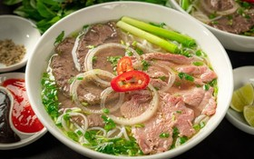

Phở Hà Nội
Phở được cho là có nguồn gốc từ miền Bắc Việt Nam vào đầu thế kỷ 20. Món ăn này nhanh chóng trở nên phổ biến ở
Hà Nội và trở thành một phần không thể thiếu của văn hóa ẩm thực thủ đô.
Qua thời gian, phở Hà Nội vẫn giữ được hương vị truyền thống đặc trưng, làm say lòng biết bao thực khách.
Thành phần:
Bánh phở: Sợi phở trắng, mỏng, mềm dẻo.
Nước dùng: Ninh từ xương bò, tủy bò và các loại gia vị (hoa hồi, quế, thảo quả, đinh hương, gừng, hành tây...).
Thịt bò: Thường là thịt thăn, bắp hoặc nạm, có thể ăn tái hoặc chín.
Rau thơm: Hành lá, rau mùi (ngò rí).
Gia vị ăn kèm:Tương ớt, chanh, ớt tươi, giấm tỏi.
Thêm vào giỏ hàng